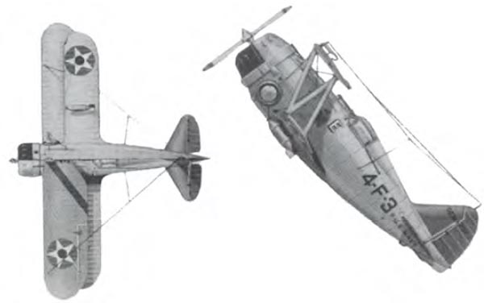
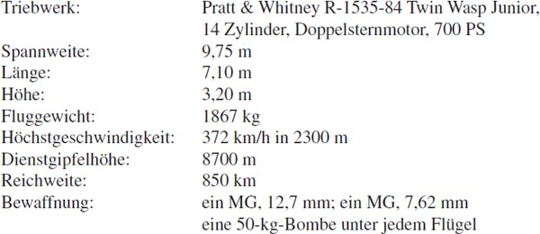

Diese Maschine, ein Produkt der Grumman Aircraft Engineering Corporation, wurde bis 1941 bei der US-Marine geflogen. Die F3F war ein Nachfolgemuster der FF-1, des ersten, damals für die Marine mit einem einziehbaren Fahrgestell hergestellten Jagdflugzeugs. Der Prototyp, eine zweisitzige Ausführung, flog bereits im Jahr 1931. Nachfolger dieses zu jener Zeit bewährtesten Marine-Jagdzweisitzers wurde die F2F, eine verhältnismäßig kleine, tonnenförmige Maschine, deren äußere Form sich auch bei den späteren Grumman-Mustern wie „Hellcat“ etc. fortsetzte. Die Variante F3F flog erstmals im Mai 1939 und wurde auf den US-Flugzeugträgern „Ranger“ und „Saratoga“ bis 1940 verwendet. Nach einem zeitgenössischen Urteil war die F3F-2 der damals beste Jagdeinsitzer der US-Marine-Luftwaffe. Diese Ausführung war u. a. auch auf dem Flugzeugträger „Enterprise“ eingesetzt. Insgesamt waren 164 Maschinen des Typs F3F gebaut worden.
